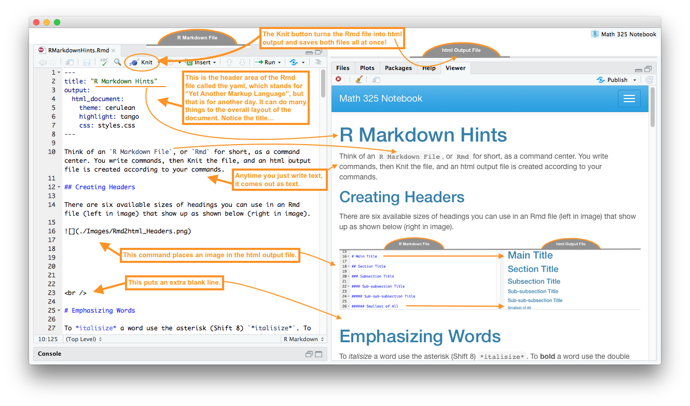
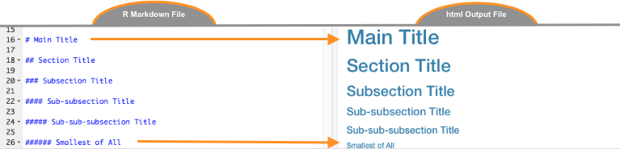
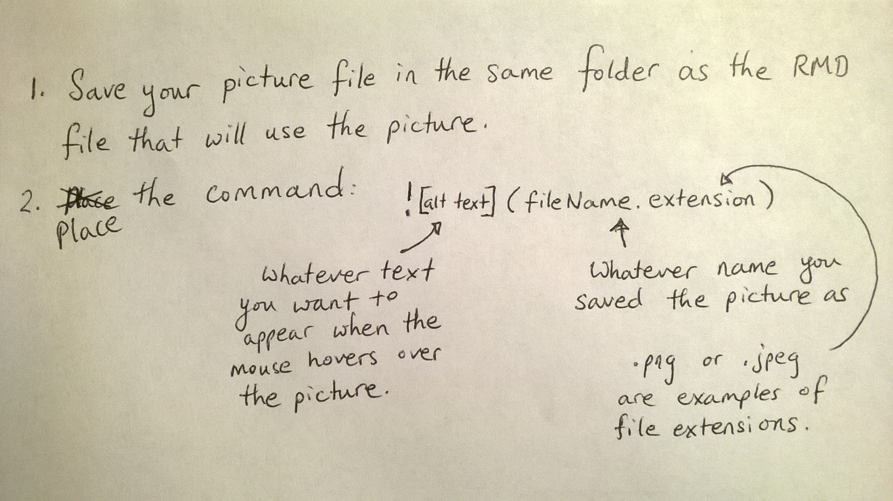

Think of an R Markdown File, or Rmd for short, as a command center. You write commands, then Knit the file, and an html output file is created according to your commands. 1
Carefully read through all parts of this image to learn…

The above tabs were created with the code:
## {.tabset .tabset-pills .tabset-fade}
### Hide Cheatsheet
### Show
Text and image were placed here...
##To make a link use the code [Name of Link](addressForLink).
Linking to parts of your textbook:
[Numerical Summaries](NumericalSummaries.html) becomes Numerical Summaries[Boxplots](GraphicalSummaries.html#boxplots) becomes Boxplots[R Commands](RCommands.html) becomes R CommandsLinking to outside resources:
[R Colors](http://www.stat.columbia.edu/~tzheng/files/Rcolor.pdf) becomes R ColorsThere are six available sizes of headings you can use in an Rmd file (left in image) that show up as shown below (right in image).

To italisize a word use the asterisk (Shift 8) *italisize*. To bold a word use the double asterisk **bold**. The back tic can be used tohighlightwords by placing back tics on each side of a word: highlight `.
To achieve the result:
This is the first item.
This is the second.
This is the third.
Use the code:
To achieve the result:
* This is the first item.
* This is the second.
* This is the third.To achieve the result:
This is the first item.
This is the second.
This is the third.
Use the code:
To achieve the result:
1. This is the first item.
2. This is the second.
3. This is the third.To achieve the result:
This is the first item.
This is the second.
This is the third.
Use the code:
To achieve the result:
A) This is the first item.
B) This is the second.
C) This is the third.What is \(2+2\)?
4
8
What is \(3\times5\)?
14
15
1. What is $2+2$?
a. **4**
b. 8
2. What is $3\times5$?
a. 14
b. **15**Use the dollar signs $x=5$ to write \(x=5\) or $z=\frac{x-\mu}{\sigma}$ to write \(z=\frac{x-\mu}{\sigma}\). For a nicely centered equation use the double dollar signs $$ $$ on separate lines
$$
z = \frac{\bar{x}-\mu}{\frac{\sigma}{\sqrt{n}}}
$$to get \[ z = \frac{\bar{x}-\mu}{\frac{\sigma}{\sqrt{n}}} \]
Or
$$
H_0: \mu_1 = \mu_2
$$
$$
H_a: \mu_1 \neq \mu_2
$$to get \[ H_0: \mu_{\text{Group 1}} = \mu_{\text{Group 2}} \] \[ H_a: \mu_{\text{Group 1}} \neq \mu_{\text{Group 2}} \]
Symbol list:
| Symbol | LaTeX Math Code |
|---|---|
| \(\alpha\) | $\alpha$ |
| \(\beta\) | $\beta$ |
| \(\sigma\) | $\sigma$ |
| \(\epsilon\) | $\epsilon$ |
| \(\bar{x}\) | $\bar{x}$ |
| \(\hat{Y}\) | $\hat{Y}$ |
| \(=\) | $=$ |
| \(\ne\) | $\ne$ or $\neq$ |
| \(>\) | $>$ |
| \(<\) | $<$ |
| \(\ge\) | $\ge$ |
| \(\le\) | $\le$ |
| \(\{ \}\) | $\{ \}$ |
| \(\text{Type just text}\) | $\text{Type just text}$ |
| \(\overbrace{Y_i}^\text{label}\) | $\overbrace{Y_i}^\text{label}$ |
| \(\underbrace{Y_i}_\text{label}\) | $\underbrace{Y_i}_\text{label}$ |
To add a picture to your document, say some notes you took down on paper from class,
Use the code:  to get…

There are many ways to make tables in R Markdown. Here is a simple way to make a “pipe” table.
| Name | Age | Gender |
|---------------|---------------|--------------|
| Jill | 8 | Female |
| Jack | 9 | Male || Name | Age | Gender |
|---|---|---|
| Jill | 8 | Female |
| Jack | 9 | Male |
Notice in the YAML (at the top of the RMD file) there is a line that reads:
“theme: cerulean”
Other possible themes are
You can also change the highlighting by adding the line “highlight: tango” to the YAML as follows.
---
title: "Markdown Hints"
output:
html_document:
theme: cerulean
highlight: tango
---Other highlighting options are
Go to the rmarkdown.rstudio.com website for more information on how to use R Markdown.